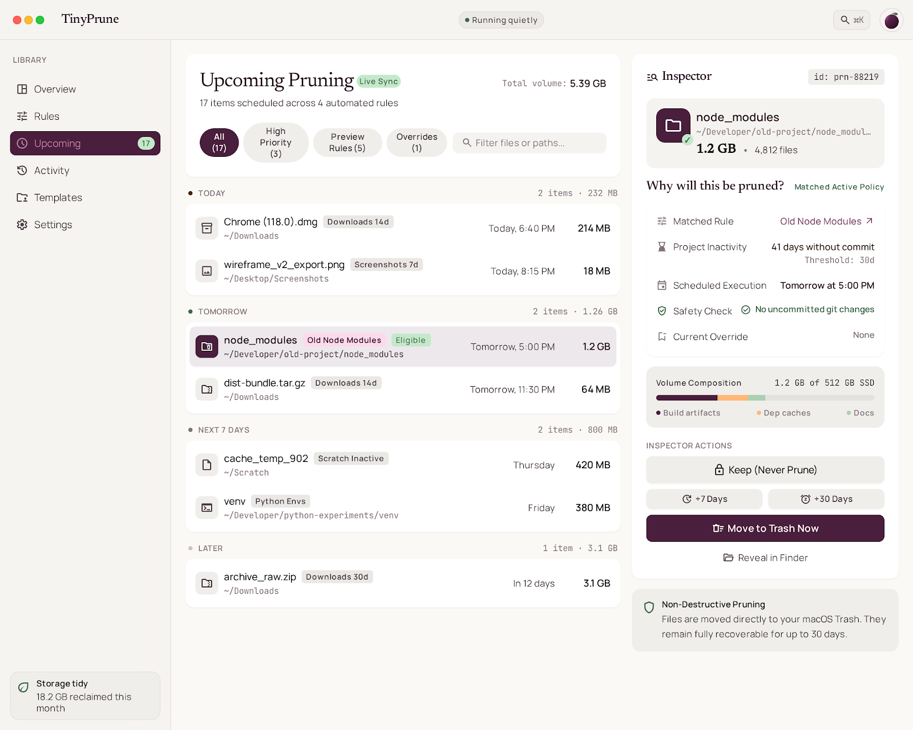
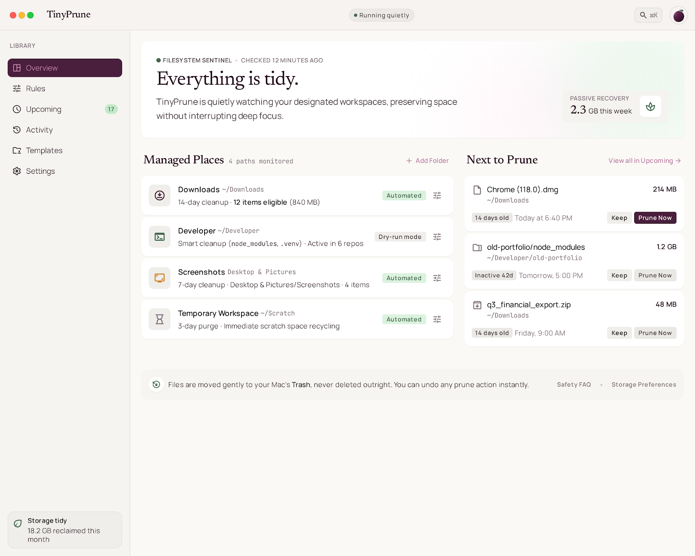
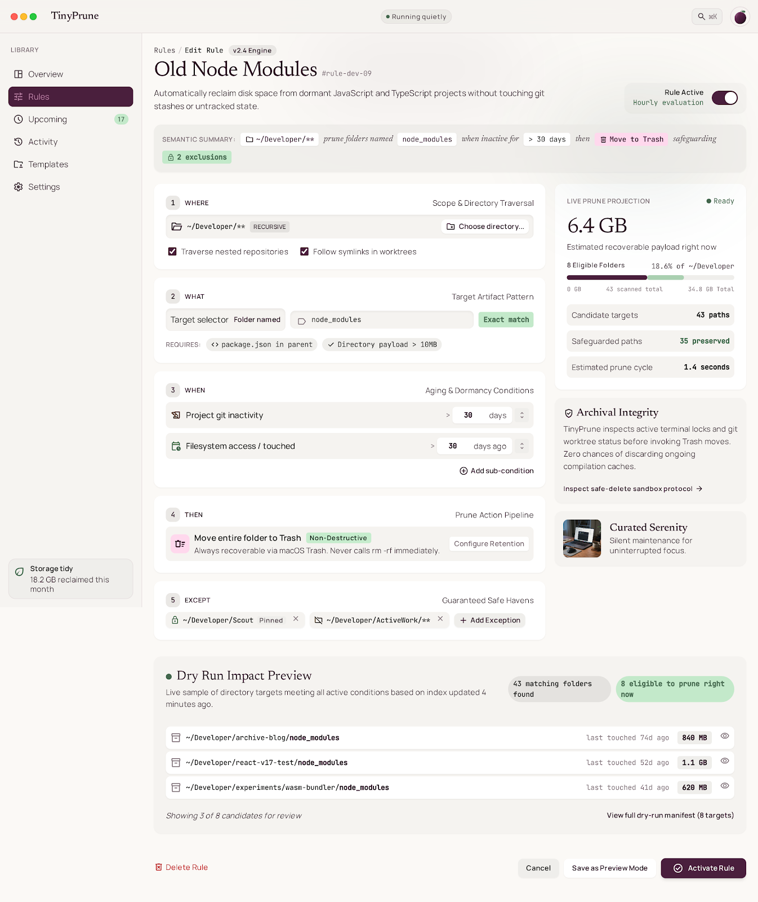

See why before it moves.
Each item has a plain explanation of its matching rule and resolved expiry.
 TinyPrune
TinyPrune
File lifetimes for macOS
Set a lifetime once. TinyPrune handles the disposable files, then moves them safely to Trash.

A small promise
TinyPrune explains the rule, the date, and the conditions behind every candidate. You can start broad rules in Preview and review the outcome before anything moves.

Each item has a plain explanation of its matching rule and resolved expiry.
Keep overrides always beat inherited rules. Protected descendants protect their parent folders too.
Eligible items go through the standard macOS Trash path. TinyPrune does not permanently delete files.
Downloads, screenshots, build artifacts, dependency folders, temporary exports. Define a clear lifetime and leave the rest alone.
Explore the rule model
Local-first. No account. No cloud sync. No content inspection.